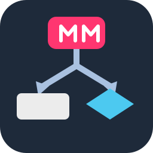
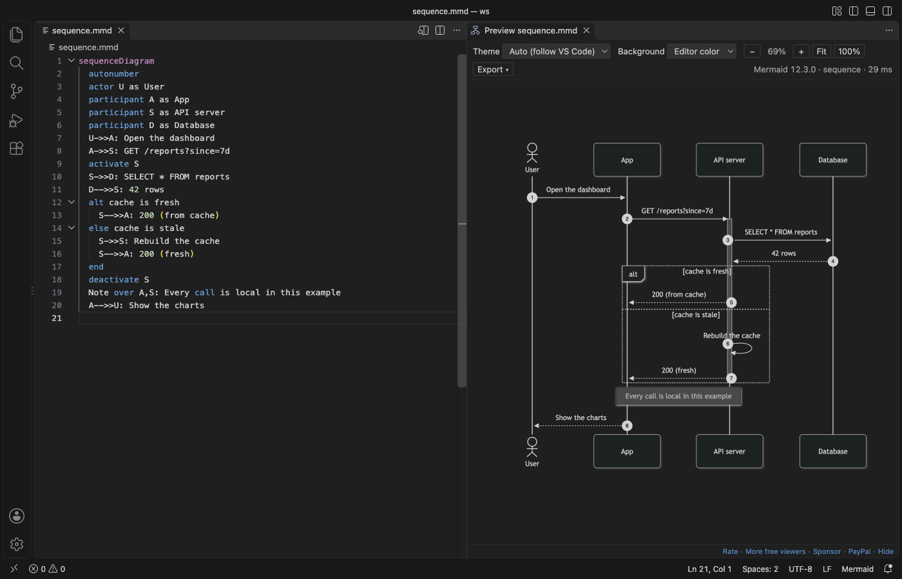
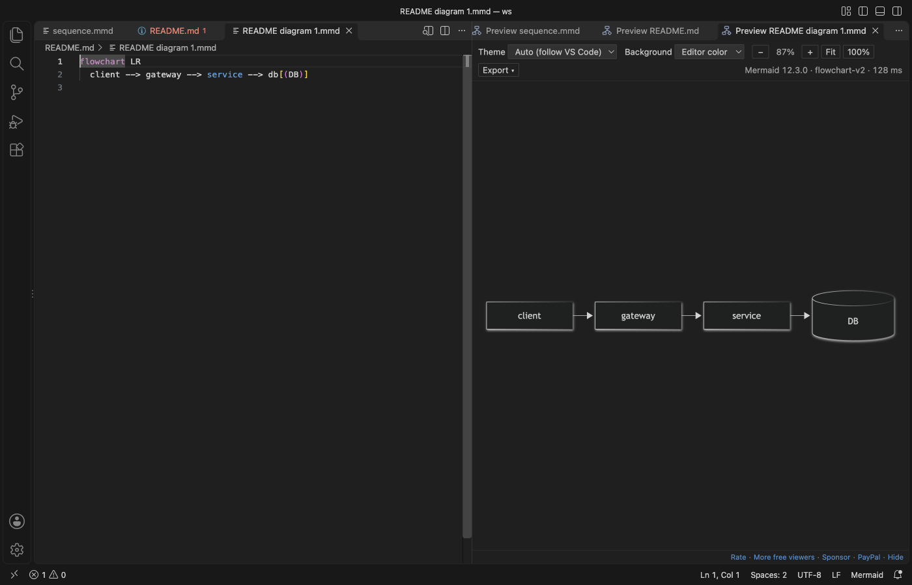
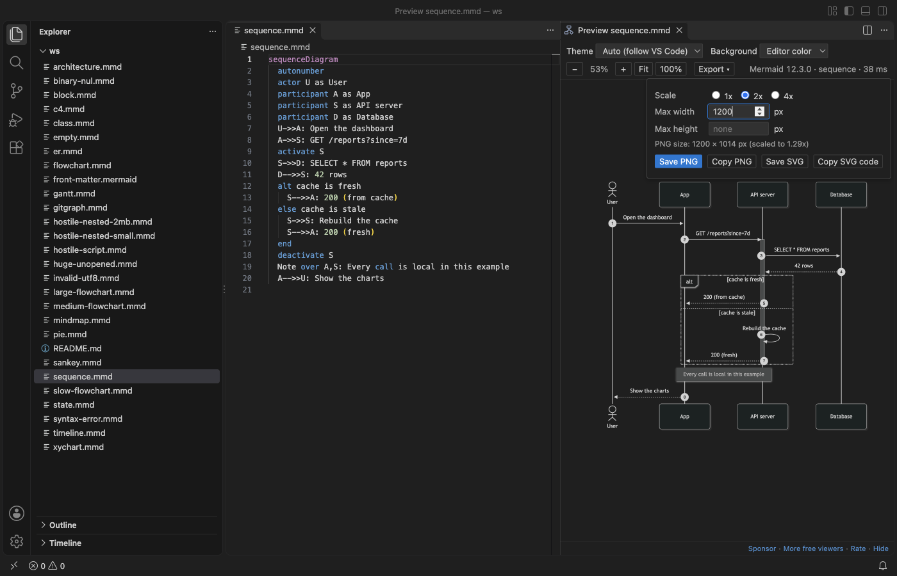

Mermaid Diagram Editor & Viewer, Live Diagram Preview (MMD, PNG/SVG Export, Offline)
Mermaid Diagram Editor & Viewer, Live Diagram Preview (MMD, PNG/SVG Export, Offline), a VS Code extension by Zovo
Free, no sign-in, works offline. Write Mermaid on the left and see the diagram on the right while you type, in .mmd files and in mermaid blocks inside Markdown. No login, no AI, no account and no network.
Free, MIT license. Needs VS Code 1.90.0 or newer. Extension ID zovo.mermaid-viewer, version 0.3.0.

Real output from VS Code 1.142 on macOS: sequence.mmd from scripts/make-samples.mjs, opened with "Open Diagram Editor". scripts/e2e-editor.mjs installed the packaged extension in a clean VS Code profile and saved the window through the debug port.
- It edits diagrams where they live. "Edit diagram" above each
mermaidblock in a Markdown file opens that block next to a live preview. Save, and the text goes back into the Markdown file. Undo in the Markdown file takes it back. - It helps while you type: completion for diagram types, keywords, arrows and shapes; a red underline on the line with the error; 15 starter templates.
- It exports the size you ask for: PNG at an exact width or height, or at 1x, 2x or 4x. Small SVG files, with an option for plain text labels that Azure DevOps and GitHub wikis show. PDF with a title page. Copy PNG or SVG to the clipboard.
- Mermaid 12.3.0 ships inside, so it draws behind a proxy or on a plane, and it never asks you to log in.
Quick start
- Install the extension.
- Open a
.mmdor.mermaidfile and run "Mermaid Viewer: Open Diagram Editor" from the Command Palette, or click the preview icon at the top right of the editor (Cmd+K V, orCtrl+K Von Windows and Linux). - In a Markdown file, click "Edit diagram" above a mermaid block.
- No file yet? Run "Mermaid Viewer: New Diagram from Template".
"Mermaid Viewer: Get Started" in the Command Palette opens a short tour.
Questions people ask
Is Mermaid Diagram Editor & Viewer, Live Diagram Preview (MMD, PNG/SVG Export, Offline) free?
Yes. Mermaid Diagram Editor & Viewer, Live Diagram Preview (MMD, PNG/SVG Export, Offline) is free and MIT licensed.
How do I install Mermaid Diagram Editor & Viewer, Live Diagram Preview (MMD, PNG/SVG Export, Offline)?
Click "Install in VS Code" above, or search for zovo.mermaid-viewer in the Extensions view.
Why this one
Reviews of Mermaid extensions on the Marketplace name the same problems again and again. This is what Mermaid Viewer does about each one, checked in a real VS Code with scripts/e2e-editor.mjs:
| What reviewers asked for | What Mermaid Viewer does (measured) |
|---|---|
| A preview without a login, including behind a company proxy (review, Oct 2026; review, Oct 2026) | No account, no sign-in prompt, no AI. The whole release check made 0 network requests from the preview. |
| A way to set the PNG width or height (review, 28 Oct 2026) | Width or Height in the Export menu gives exactly that size. A width of 2,000 px gave a PNG 2,000 px wide. |
| Smaller SVG files that work in an Azure DevOps wiki (same review) | SVG export drops unused CSS and rounds coordinates: the sample flowchart went from 66 KB (Mermaid's own SVG) to 35 KB. "Text labels for wikis" writes labels as SVG text, with no HTML foreignObject, and the file has no remote URL. |
| No slow, pushy extras (review, Oct 2026) | No sync, no chat and no pop-ups. CodeLens shows only above `mermaid blocks, never on other code blocks, and a setting turns it off. |
| Zoom past 500 % on large charts (review, Mar 2026) | Zoom from 1 % to 3,200 % at the pointer. Trackpad: two fingers pan, a pinch zooms. |
Diagrams inside Markdown, not only .mmd files (review) | Every mermaid block of a Markdown file in one preview, and "Edit diagram" for each block. A 200-block file and the 116-block Mermaid flowchart docs page both open. |
| Labels that are not cut off (review, Jun 2025) | The release check measures every label against its box in 16 sample diagrams. |
Mermaid Viewer is an independent extension by Zovo. It is not made by, and does not replace, any other publisher's extension.
Mermaid blocks in Markdown


- "Edit diagram" opens the block as a small
.mmdfile next to a live preview, with completion and error underlines. - Save it, and the text goes back into its block. The Markdown file is saved too when it had no other unsaved changes. Undo in the Markdown file takes the change back.
- If the block was changed in the Markdown file in the meantime, the block editor loads the new text. If the block is gone, nothing is written and a message says why.
- "Preview" shows that one diagram with zoom and export. The preview of a whole Markdown file lists every diagram, each with its own error line and its own export buttons.
- The "Mermaid Diagrams" view in the Explorer lists the diagrams of the open file, with the heading above each one. Click a row to go there.
Help while you type
- Completion knows the diagram types on the first line, and then the keywords, arrows and node shapes of that type:
participant,alt,->>in a sequence diagram,subgraph,classDef,-.->in a flowchart, and so on. - The preview draws again 100 ms after you stop typing. Small diagrams appear at once (15 to 200 ms for the templates); a 300-node flowchart takes Mermaid under a second to lay out. While a big diagram is still drawing, only your newest text is drawn after it, so drawings never pile up.
- An error underlines its line in red, shows in the Problems panel and at the top of the preview. The last good diagram stays on screen, faded. Click the error to jump to the line.
- "New Diagram from Template" has flowchart, sequence, class, state, ER, Gantt, pie, mindmap, timeline, gitGraph, C4, sankey, XY chart, block and architecture diagrams. In a Markdown file, the template goes in at the cursor as a mermaid block.
Export

| Option | What it does |
|---|---|
| Scale | 1x, 2x or 4x of the drawn size |
| Width, Height | Exact size in pixels. Set one and the other follows the shape. Set both and the PNG is the largest size that fits in that box. The menu shows the final size before you save. |
| Text labels for wikis | Labels as plain SVG text instead of HTML. Use it for Azure DevOps and GitHub wikis and for tools that drop HTML in SVG. |
| Save PNG, Save SVG | A save dialog next to the source file. In Markdown, the file name gets the diagram number. |
| Copy PNG, Copy SVG code | To the clipboard, ready to paste into a chat, an issue or a slide |
| Save PDF | Every diagram of the file in one PDF, with a title page that lists them |
Exports use the background from the toolbar: the editor color, white, transparent or a custom color. SVG files name no web fonts and load nothing from the internet.
"Export All Diagrams in Workspace" writes every diagram of every .mmd, .mermaid and Markdown file in the folder to SVG, PNG or both, into mermaid-export/ with the same folders as the sources. Diagrams that cannot be drawn are listed at the end.
Big and untrusted files
- Mermaid runs with its strict security level, and a
%%{init}%%line cannot loosen it.clickcallbacks do nothing,javascript:links and remote images are removed, and HTML in labels is cleaned twice. The preview page has no network access at all. - Diagrams over 500,000 characters or 2,000 links are not drawn, and the preview says which setting to raise. A 5 MB
.mmdfile gets that message at once. A file far over the limit is not even read when you open its preview from the Explorer. - A 300-step sequence diagram draws in under a quarter of a second. A 2,000-node flowchart takes Mermaid about 14 seconds to lay out, and VS Code stays responsive meanwhile. A Markdown file with 200 diagrams lists all of them in about 5 seconds.
- A drawing that runs past the time limit (
mermaidViewer.renderTimeoutSeconds, 10 seconds after the last change) is stopped with a message that names the setting. - A diagram that takes longer than 10 seconds is stopped with a message, and VS Code stays responsive.
Themes
The Mermaid theme follows VS Code: dark in dark themes, default in light ones. The toolbar also offers default, dark, forest, neutral and base. A theme set inside the diagram wins. The background can be the editor color, white, transparent or a custom color.
Settings
| Setting | Default | What it does |
|---|---|---|
mermaidViewer.theme | auto | Mermaid theme for new previews |
mermaidViewer.background | theme | theme, white, transparent or custom |
mermaidViewer.customBackground | #f5f5f0 | The custom color |
mermaidViewer.wheel | auto | auto: a mouse wheel zooms, two fingers on a trackpad pan. zoom or pan for one behavior. |
mermaidViewer.updateDelayMs | 100 | Pause after typing before the preview draws again |
mermaidViewer.maxTextSize | 500000 | Largest diagram in characters |
mermaidViewer.maxEdges | 2000 | Largest diagram in links |
mermaidViewer.renderTimeoutSeconds | 10 | Time limit for one drawing |
mermaidViewer.languageIds | ["mermaid"] | More language ids to treat as Mermaid |
mermaidViewer.codeLens | true | "Edit diagram" and "Preview" above mermaid blocks in Markdown |
mermaidViewer.saveMarkdownOnBlockSave | true | Save the Markdown file when you save a block, if it had no other changes |
mermaidViewer.svgTextLabels | false | SVG export with plain text labels by default |
mermaidViewer.exportFolder | mermaid-export | Folder for "Export All Diagrams in Workspace" |
mermaidViewer.askForRating | true | One rating request after some use |
mermaidViewer.showSupportLinks | true | The small Rate, Sponsor and More free viewers links under the preview |
Privacy
Mermaid Viewer sends nothing anywhere. It has no telemetry, no account and no AI. The preview and export pages block every network request with their Content Security Policy, and the extension makes no network calls. Links you click in the footer (Rate, Sponsor) open in your browser.
Limits
- Math in labels (
$$...$$) may not look right, because the KaTeX fonts are not bundled. - Icon packs that Mermaid loads from the internet are not loaded. Built-in icons work.
- PDF export puts each diagram on its own A4 page as an image.
License
MIT. Mermaid is MIT licensed. Its bundled parts and their licenses are listed in THIRD-PARTY-NOTICES.md.
Guides
Install Mermaid Diagram Editor & Viewer, Live Diagram Preview (MMD, PNG/SVG Export, Offline)
Click the button to open VS Code and install it, or press Ctrl+P (Cmd+P on macOS) in VS Code and run ext install zovo.mermaid-viewer.
Free, MIT license. Needs VS Code 1.90.0 or newer. Extension ID zovo.mermaid-viewer, version 0.3.0.
Source code and issues are on GitHub.
Zovo Pro and support
Zovo Pro: USD 19 once, every Zovo viewer. It turns on the Pro tools in this extension and in the other Zovo extensions you use. The free features stay free.
You can also support the work with no Pro:
Need your format supported?
Open a format request with a sample file, and I reply there whether it can be done. For USD 299 once, through this GitHub Sponsors tier, I add your file format or a missing feature to this extension, with tests, within 7 days.